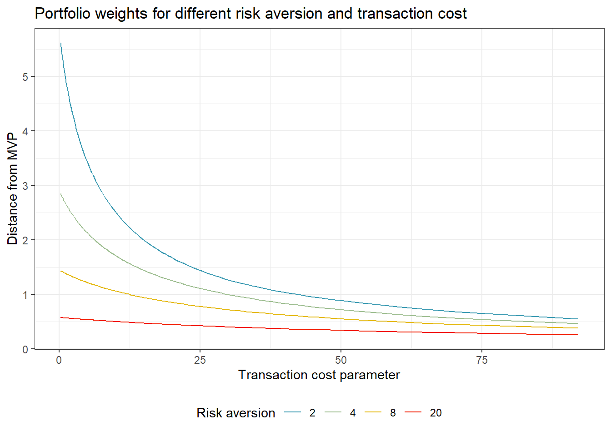

14 Constraint Optimization and Portfolio Backtesting
In this section we conduct portfolio back testing in a more realistic setting with transaction costs and investment constraints such as no-short selling rules.
We start with standard mean-variance efficient portfolios and then introduce further constraints step-by-step. Numerical constrained optimization is done with the packages quadprog (for quadratic objective functions such as in typical mean-variance framework) and alabama (for more general, non-linear objectives and constraints).
library(tidyverse)
library(RSQLite)
library(quadprog) # Optimization (mean-variance)
library(alabama) # Advanced optimization (non-linear objective or constraints)
library(scales)14.1 Data preparation
We start by loading the required data. In our application we will restrict our investment universe to the monthly Fama-French industry portfolio returns.
14.2 Recap: Portfolio choice
First a brief recap. A common objective for portfolio optimization is to choose mean-variance efficient portfolio weights, that is the allocation which delivers the lowest possible return variance for a given minimum level of expected returns. In the most extreme case where the investor is only concerned about portfolio variance, she may choose to implement the minimum variance portfolio weights which are given by the solution to \[w_\text{mvp} = \arg\min w'\Sigma w \text{ s.t. } w'\iota = 1\] where \(\Sigma\) is the \((N \times N)\) variance covariance matrix of the returns. The optimal weights \(\omega_\text{mvp}\) can be found analytically and are \(\omega_\text{mvp} = \frac{\Sigma^{-1}\iota}{\iota'\Sigma^{-1}\iota}\). In code, this is equivalent to the following:
Sigma <- cov(industry_returns)
w_mvp <- solve(Sigma) %*% rep(1, ncol(Sigma))
w_mvp <- as.vector(w_mvp / sum(w_mvp))Next, consider an investor who aims to achieve minimum variance given a required expected portfolio return \(\bar{\mu}\) such that she chooses \[w_\text{eff}({\bar{\mu}}) =\arg\min w'\Sigma w \text{ s.t. } w'\iota = 1 \text{ and } \omega'\mu \geq \bar{\mu}.\] It can be shown (see Exercises) that the portfolio choice problem can equivalently be formulated for an investor with mean-variance preferences and risk aversion factor \(\gamma\). The investor aims to choose portfolio weights such that \[\begin{aligned} w^*_\gamma = \arg\max w' \mu - \frac{\gamma}{2}w'\Sigma w\end{aligned}\quad s.t. w'\iota = 1.\] The solution to the optimal portfolio choice problem is: \[\begin{aligned} \omega^*_{\gamma} & = \frac{1}{\gamma}\left(\Sigma^{-1} - \frac{1}{\iota' \Sigma^{-1}\iota }\Sigma^{-1}\iota\iota' \Sigma^{-1} \right) \mu + \frac{1}{\iota' \Sigma^{-1} \iota }\Sigma^{-1} \iota. \end{aligned}\] Empirically this classical solution imposes many problems: Especially the estimates of \(\mu_t\) are noisy over short horizons, the (\(N \times N\)) matrix \(\Sigma_t\) contains \(N(N-1)/2\) distinct elements and thus, estimation error is huge. Even worse, if the asset universe contains more assets than available time periods \((N > T)\), the sample variance covariance matrix is not longer positive definite such that the inverse \(\Sigma^{-1}\) does not exist anymore. On top of the estimation uncertainty, transaction costs are a major concern. Rebalancing portfolios is costly and therefore the optimal choice should depend on the current holdings of the investor.
14.3 Estimation uncertainty and transaction costs
The empirical evidence regarding the performance of a mean-variance optimization procedure in which you simply plugin some sample estimates \(\hat \mu_t\) and \(\hat \Sigma_t\) can be summarised rather easily: Mean-variance optimization performs badly! The literature brought forward many proposals to overcome these empirical issues. For instance, one may impose some form of regularization of \(\Sigma\), rely on Bayesian priors inspired by theoretical asset pricing models, or use high-frequency data to improve forecasting. One unifying framework that works easily, effective (even for large dimensions) and is purely inspired by economic arguments is an ex-ante adjustment for transaction costs (Hautsch2019?).
Assume that returns are multivariate normal distributed such that: \(p_t({r}_{t+1}|\mathcal{M})=N(\mu,\Sigma)\). Additionally we assume quadratic transaction costs which penalize rebalancing such that \[\begin{aligned}
\nu\left(\omega_{t+1},\omega_{t^+}, \beta\right) :=\nu_t\left(\omega_{t+1}, \beta\right) = \frac{\beta}{2} \left(\omega_{t+1} - \omega_{t^+}\right)'\left(\omega_{t+1}- \omega_{t^+}\right),
\end{aligned}\]
with cost parameter \(\beta>0\) and \(\omega_{t^+} := {\omega_t \circ (1 +r_{t})}/{\iota' (\omega_t \circ (1 + r_{t}))}\). Note: \(\omega_{t^+}\) differs mechanically from \(\omega_t\) due to the returns in the past period.
Then, the optimal portfolio choice is
\[\begin{aligned}
\omega_{t+1} ^* :=& \arg\max_{\omega \in \mathbb{R}^N, \iota'\omega = 1} \omega'\mu - \nu_t (\omega,\omega_{t^+}, \beta) - \frac{\gamma}{2}\omega'\Sigma\omega \\
=&\arg\max_{\omega\in\mathbb{R}^N,\text{ } \iota'\omega=1}
\omega'\mu^* - \frac{\gamma}{2}\omega'\Sigma^* \omega ,
\end{aligned}\]
where
\[\begin{aligned}
\mu^*:=\mu+\beta \omega_{t^+} \quad \text{and} \quad \Sigma^*:=\Sigma + \frac{\beta}{\gamma} I_N.
\end{aligned}\]
As a result, adjusting for transaction costs implies a standard mean-variance optimal portfolio choice with adjusted return parameters \(\Sigma^*\) and \(\mu^*\): \[\begin{aligned}
\omega^*_{t+1} & = \frac{1}{\gamma}\left(\Sigma^{*-1} - \frac{1}{\iota' \Sigma^{*-1}\iota }\Sigma^{*-1}\iota\iota' \Sigma^{*-1} \right) \mu^* + \frac{1}{\iota' \Sigma^{*-1} \iota }\Sigma^{*-1} \iota.
\end{aligned}\]
An alternative formulation of the optimal portfolio can be derived as follows: \[\begin{aligned} \omega_{t+1} ^*=\arg\max_{\omega\in\mathbb{R}^N,\text{ } \iota'\omega=1} \omega'\left(\mu+\beta\left(\omega_{t^+} - \frac{1}{N}\iota\right)\right) - \frac{\gamma}{2}\omega'\Sigma^* \omega . \end{aligned}\] The optimal weights correspond to a mean-variance portfolio where the vector of expected returns is such that assets that currently exhibit a higher weight are considered as delivering an higher expected return.
14.4 Optimal portfolio choice in R
The function below implements the efficient portfolio weight in its general form which also allows to reflect transaction costs (conditional on the holdings before reallocation). For \(\beta=0\), the computation resembles the standard mean-variance efficient framework.
compute_efficient_weight <- function(Sigma,
mu,
gamma = 2, # risk-aversion
beta = 0, # transaction costs
w_prev = 1/ncol(Sigma) * rep(1, ncol(Sigma))){ # weights before rebalancing
iota <- rep(1, ncol(Sigma))
Sigma_processed <- Sigma + beta / gamma * diag(ncol(Sigma))
mu_processed <- mu + beta * w_prev
Sigma_inverse <- solve(Sigma_processed)
w_mvp <- Sigma_inverse %*% iota
w_mvp <- as.vector(w_mvp / sum(w_mvp))
w_opt <- w_mvp + 1/gamma * (Sigma_inverse - 1 / sum(Sigma_inverse) * Sigma_inverse %*% iota %*% t(iota) %*% Sigma_inverse) %*% mu_processed
return(as.vector(w_opt))
}
mu <- colMeans(industry_returns)
compute_efficient_weight(Sigma, mu)## [1] 1.4307987 0.2701363 -1.3024366 0.3742729 0.3093118 -0.1521964
## [7] 0.5378376 0.4712071 -0.1669907 -0.7719408What is the effect of transaction costs or different levels of risk aversion on the optimal portfolio choice? The following few lines of code analyse the distance between the minimum variance portfolio and the portfolio implemented by the investor for different values of the transaction cost parameter \(\beta\) and risk aversion \(\gamma\).
transaction_costs <- expand_grid(gamma = c(2, 4, 8, 20),
beta = 20 * qexp((1:99)/100)) %>% # transaction costs in basis points
mutate(weights = map2(.x = gamma,
.y = beta,
~compute_efficient_weight(Sigma,
mu,
gamma = .x,
beta = .y / 10000,
w_prev = w_mvp)),
concentration = map_dbl(weights, ~sum(abs(. - w_mvp))))
transaction_costs %>%
mutate(`Risk aversion` = as_factor(gamma)) %>%
ggplot(aes(x = beta, y = concentration, color = `Risk aversion`)) +
geom_line() +
scale_x_sqrt() +
labs(x = "Transaction cost parameter",
y = "Distance from MVP",
title = "Optimal portfolio weights for different risk aversion and transaction cost values",
caption = "Initial portfolio is always the (sample) minimum variance portfolio. Distance is measured as the sum of absolute deviations. ") +
theme_minimal() +
theme(legend.position = "bottom") The figure show that the higher the transaction costs parameter \(\beta\), the smaller rebalancing from the initial portfolio (which we always set to the minimum variance portfolio weights in this example). Further, if risk aversion \(\gamma\) increases, the efficient portfolio is closer to the minimum variance portfolio weights such that the investor desires less rebalancing from the initial holdings.
14.5 Constrained optimization
Next we introduce constrained optimization. Very often, typical constraints such as no-short selling rules prevent analytical solutions for optimal portfolio weights. However, numerical optimization allows to compute the solutions to such constrained problems. For the purpose of mean-variance optimization we rely on solve.QP from the package quadprog. First, we start with an unconstrained problem to replicate the analytical solutions for the minimum variance and efficient portfolio weights from above.
# To get started: replicate minimum variance portfolio as numerical solution
w_mvp_numerical <- solve.QP(Dmat = Sigma,
dvec = rep(0, N), # no vector of expected returns for MVP
Amat = cbind(rep(1, N)), # Matrix A has one column which is a vector of ones
bvec = 1, # bvec is 1 and enforces the constraint that weights sum up to one
meq = 1) # there is one (out of one) equality constraint
# Check that w and w_numerical are the same (up to numerical instabilities)
cbind(w_mvp, w_mvp_numerical$solution)## w_mvp
## [1,] 0.218217861 0.218217861
## [2,] -0.024598381 -0.024598381
## [3,] 0.132583584 0.132583584
## [4,] 0.061873595 0.061873595
## [5,] 0.009580795 0.009580795
## [6,] 0.247523928 0.247523928
## [7,] 0.090240088 0.090240088
## [8,] 0.145530839 0.145530839
## [9,] 0.493397247 0.493397247
## [10,] -0.374349557 -0.374349557
w_efficient_numerical <- solve.QP(Dmat = 2 * Sigma,
dvec = mu, # no vector of expected returns for MVP
Amat = cbind(rep(1, N)), # Matrix A has one column which is a vector of ones
bvec = 1, # bvec is 1 and enforces the constraint that weights sum up to one
meq = 1) # there is one (out of one) equality constraint
cbind(compute_efficient_weight(Sigma, mu), w_efficient_numerical$solution)## [,1] [,2]
## [1,] 1.4307987 1.4307987
## [2,] 0.2701363 0.2701363
## [3,] -1.3024366 -1.3024366
## [4,] 0.3742729 0.3742729
## [5,] 0.3093118 0.3093118
## [6,] -0.1521964 -0.1521964
## [7,] 0.5378376 0.5378376
## [8,] 0.4712071 0.4712071
## [9,] -0.1669907 -0.1669907
## [10,] -0.7719408 -0.7719408The function solve.QP from package quadprog delivers numerical solution to quadratic programming problem of the form
\[\min(-\mu \omega + 1/2 \omega' \Sigma \omega) \text{ s.t. } A' \omega >= b_0.\]
The function takes one argument (meq) for the number of equality constraints. Therefore, above matrix \(A\) is simply a vector of ones to ensure that the weights sum up to one. In the case of no-short selling, the matrix \(A\) is of the form
\[\begin{aligned}A = \begin{pmatrix}1 & 1& \ldots&1 \\1 & 0 &\ldots&0\\0 & 1 &\ldots&0\\\vdots&&\ddots&\vdots\\0&0&\ldots&1\end{pmatrix}'\qquad b_0 = \begin{pmatrix}1\\0\\\vdots\\0\end{pmatrix}\end{aligned}.\]
For more complex optimization routines, this link (optimization task view) provides an overview over the wast optimization landscape in R. Next we approach problems where no analytical solutions exist. First, we additionally impose no short-sale constraints which implies \(N\) additional inequality constraints: \(w_i >=0\).
A <- cbind(1, diag(N)) # Matrix of constraints t(A) >= bvec = c(1, rep(0, N))
# Introduce short-selling constraint: no element of w is allowed to be negative
w_no_short_sale <- solve.QP(Dmat = 2 * Sigma, # Efficient portfolio with risk aversion gamma = 2
dvec = mu,
Amat = A,
bvec = c(1, rep(0, N)),
meq = 1)$solutionsolve.QP is fast because it benefits from a very clear structure with a quadratic objective and linear constraints. Often, however, optimization requires more flexibility. As one example, we show below how to compute optimal weights which are subject to the so-called regulation T-constraint which requires that the sum of all absolute portfolio weights is smaller than 1.5. The constraint implies an initial margin requirement of 50%. This clearly is a non-linear objective function, thus we cannot longer rely on solve.QP. Instead, we rely on the package alabama which requires us to define the objective and constraint functions individually.
fn <- function(w, gamma = 2) -t(w) %*% mu + gamma / 2 * t(w)%*%Sigma%*%w # Objective function which we minimize
hin <- function(w, reg_t = 1.5) return(reg_t - sum(abs(w))) # inequality constraints such that reg_t > sum(abs(w))
heq <- function(w) return(sum(w) - 1) # equality constraint
w_reg_t <- constrOptim.nl( # from alabama package
par = 1/N * rep(1, N),# Initial set of weights
hin = hin,
fn = fn,
heq = heq,
control.outer = list(trace = FALSE))$par # omit optimization outputThe figure below shows the optimal allocation weights across all 10 industries for the four different strategies considered so far: minimum variance, efficient portfolio with \(\gamma\) = 2, efficient portfolio with a no-short sale constraint and the Reg-T constrained portfolio.
tibble(`No short-sale` = w_no_short_sale,
`Minimum Variance` = w_mvp,
`Efficient portfolio` = compute_efficient_weight(Sigma, mu),
`Regulation-T` = w_reg_t,
Industry = colnames(industry_returns)) %>%
pivot_longer(-Industry,
names_to = "Strategy") %>%
ggplot(aes(fill = Strategy,
y = value,
x = Industry)) +
geom_bar(position="dodge", stat="identity") +
coord_flip() +
theme_minimal() +
labs(y = "Allocation weight (in percent)",
title ="Optimal allocations for different investment rules") +
theme(legend.position = "bottom") +
scale_y_continuous(labels = percent)Before moving on, we propose a final allocation strategy which reflects a somewhat more realistic structure of transaction costs instead of the quadratic specification used above. The function below computes efficient portfolio weights while adjusting for \(L_1\) transaction costs \(\beta\sum\limits_{i=1}^N |(w_{i, t+1} - w_{i, t^+})|\). No closed-form solution exists, thus we rely on non-linear optimization procedures.
compute_efficient_weight_L1_TC <- function(mu,
Sigma,
gamma = 2,
beta = 0, # in basis points
w_prev = 1 / ncol(sigma) * rep(1, ncol(sigma))) {
# Define objective function
fn <- function(w) -t(w) %*% mu + gamma / 2* t(w) %*% Sigma %*% w + (beta / 10000) / 2 * sum(abs(w - w_prev))
w_optimal <- constrOptim.nl(
par = w_prev,# Initial set of weights
fn = fn,
heq = function(w){sum(w) - 1},
control.outer = list(trace = FALSE))$par # To omit optimization output
return(w_optimal)
}14.6 Out-of-sample backtesting
For the sake of keeping things easy, we committed one fundamental error in computing portfolio weights above: We used the full sample of the data to determine the optimal allocation. In other words, in order to implement this strategy in the beginning of the 2000’s, you will need to know in advance how the returns will evolve until 2020. Instead, while interesting from a methodological point of view, we cannot evaluate the performance of the portfolios in a reasonable out-of-sample fashion. We will do so next in a backtesting exercise. For the backtest we recompute optimal weights just based on past available data.
window_length <- 120 # Estimation window (length of past available data)
periods <- nrow(industry_returns) - window_length # total number of out-of-sample periods
beta <- 50 # Transaction costs in basis points
gamma <- 2 # Risk aversion
performance_values <- matrix(NA,
nrow = periods,
ncol = 3) # A matrix to collect all returns
colnames(performance_values) <- c("raw_return", "turnover", "net_return") # we implement 3 strategies
performance_values <- list("MV (TC)" = performance_values,
"Naive" = performance_values,
"MV" = performance_values)
w_prev_1 <- w_prev_2 <- w_prev_3 <- rep(1/N ,N) # Every strategy starts with naive portfolio
# Two small helper functions: Weight adjustments due to returns and evaluation
adjust_weights <- function(w, next_return){
w_prev <- 1 + w * next_return
return(as.numeric(w_prev / sum(as.vector(w_prev))))
}
evaluate_performance <- function(w, w_previous, next_return, beta = 50){
raw_return <- as.matrix(next_return) %*% w
turnover <- sum(abs(w - w_previous))
# Realized returns net of TC
net_return <- raw_return - beta / 10000 * turnover
return(c(raw_return, turnover, net_return))
}The lines above define the general setup: We consider 120 periods from the past to update the parameter estimates before recomputing portfolio weights. Then, portfolio weights are updated which is costly and affects the net performance. The portfolio weights determine the portfolio return. A period later, the current portfolio weights have changed and form the foundation for transaction costs incurred in the next period. We consider three different competing strategies: the mean-variance efficient portfolio, mean-variance efficient portfolio with ex-ante adjustment for transaction costs and the naive portfolio which simply allocates wealth equally across the different assets.
for(i in 1:periods){ # Rolling window
# Estimation window
returns_window <- industry_returns[i : (i + window_length - 1),] # the last X returns available up to date t
next_return <- industry_returns[i + window_length, ] # Out-of-sample return in the next period
# Sample moments (in practice: replace mu or sigma with more advanced methods)
Sigma <- cov(returns_window)
mu <- 0 * colMeans(returns_window) # Note: We essentially perform MV optimization
# TC robust portfolio
w_1 <- compute_efficient_weight_L1_TC(mu = mu,
Sigma = Sigma,
beta = beta,
gamma = gamma,
w_prev = w_prev_1)
# Evaluation
performance_values[[1]][i, ] <- evaluate_performance(w_1,
w_prev_1,
next_return,
beta = beta)
#Computes adjusted weights based on the weights and next period returns
w_prev_1 <- adjust_weights(w_1, next_return)
# Naive Portfolio
w_2 <- rep(1/N, N)
# Evaluation
performance_values[[2]][i, ] <- evaluate_performance(w_2,
w_prev_2,
next_return)
#Computes adjusted weights based on the weights and next period returns
w_prev_2 <- adjust_weights(w_2, next_return)
# Mean-variance efficient portfolio (ignoring transaction costs)
w_3 <- compute_efficient_weight(Sigma = Sigma,
mu = mu,
gamma = gamma)
# Evaluation
performance_values[[3]][i, ] <- evaluate_performance(w_3,
w_prev_3,
next_return)
#Computes adjusted weights based on the weights and next period returns
w_prev_3 <- adjust_weights(w_3, next_return)
}Finally we get to the evalation of the portfolio strategies net-of-transaction costs.
performance <- lapply(performance_values, as_tibble) %>%
bind_rows(.id = "strategy")
performance %>%
group_by(strategy) %>%
summarise(Mean = 12 * mean(100 * net_return), # Annualized returns
SD = sqrt(12) * sd(100 * net_return), # Annualized standard deviation
Sharpe = if_else(Mean > 0, Mean/SD, NA_real_),
Turnover = 100 * mean(turnover)) %>%
knitr::kable(digits = 3)| strategy | Mean | SD | Sharpe | Turnover |
|---|---|---|---|---|
| MV | -0.636 | 12.386 | NA | 214.231 |
| MV (TC) | 12.105 | 15.090 | 0.802 | 0.031 |
| Naive | 12.087 | 15.093 | 0.801 | 0.229 |
The results clearly speak against mean-variance optimization. Turnover is huge when the investor only considers expected return and variance of her portfolio. Effectively, The mean-variance portfolio generated a negative annualized return after adjusting for transaction costs. At the same time, the naive portfolio turns out to perform very well. In fact, the performance gains of the transaction-cost adjusted mean-variance portfolio are small. The out-of-sample Sharpe ratio is slightly higher than for the naive portfolio. Note the extreme effect of turnover penalization on turnover: MV (TC) effectively resembles a buy-and-hold strategy which only updates the portfolio once the estimated parameters \(\hat\mu_t\) and \(\hat\Sigma_t\)indicate that the current allocation is too far away from the theoretical optimal portfolio.
14.7 Exercises
- We argue that an investor with a quadratic utility function with certainty equivalent \[\max_w CE(w) = \omega'\mu - \frac{\gamma}{2} \omega'\Sigma \omega \text{ s.t. } \iota'\omega = 1\] faces an equivalent optimization problem to a framework where portfolio weights are chosen with the aim to minimize volatility given a pre-specified level or expected returns \[\min_w \omega'\Sigma \omega \text{ s.t. } \omega'\mu = \bar\mu \text{ and } \iota'\omega = 1. \] Proof that there is an equivalence between the optimal portfolio weights in both cases.
- Consider the portfolio choice problem for transaction-cost adjusted certainty equivalent maximization with risk aversion parameter \(\gamma\) \[\begin{aligned} \omega_{t+1} ^* :=& \arg\max_{\omega \in \mathbb{R}^N, \iota'\omega = 1} \omega'\mu - \nu_t (\omega, \beta) - \frac{\gamma}{2}\omega'\Sigma\omega \\ \end{aligned}\] where \(\Sigma\) and \(\mu\) are (estimators of) the variance-covariance matrix of the returns and the vector of expected returns. Assume for now that transaction costs are quadratic in rebalancing and proportional to stock illiquidity such that \[\nu_t\left(\omega, \mathbf{\beta}\right) := \frac{\beta}{2} \left(\omega - \omega_{t^+}\right)'B\left(\omega - \omega_{t^+}\right)\] where \(B = \text{diag}(ill_1, \ldots, ill_N)\) is a diagonal matrix where \(ill_1, \ldots, ill_N\). Derive a closed-form solution for the mean-variance efficient portfolio \(\omega_{t+1} ^*\) based on the transaction cost specification above. Discuss the effect of illiquidity \(ill_i\) on the individual portfolio weights relative to an investor that myopically ignores transaction costs in her decision.
- Use the solution from the previous exercise to update the function
compute_efficient_weightsuch that you can compute optimal weights conditional on a matrix \(B\) with illiquidity measures. - Illustrate the evolution of the optimal weights from the naive portfolio to the efficient portfolio in the mean-standard deviation diagram.
- Is it always optimal to choose the same \(\beta\) in the optimization problem than the value used in evaluating the portfolio performance? In other words: Can it be optimal to choose theoretically sub-optimal portfolios based on transaction costs considerations that do not reflect the actual incurred costs? Evaluate the out-of-sample Sharpe ratio after transaction costs for a range of different values of imposed \(\beta\) values.